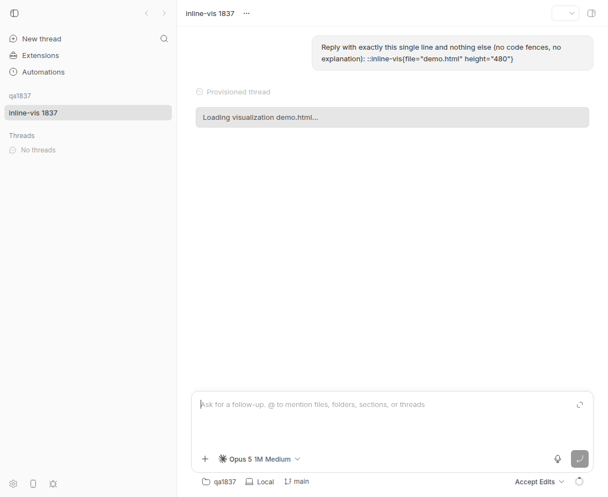
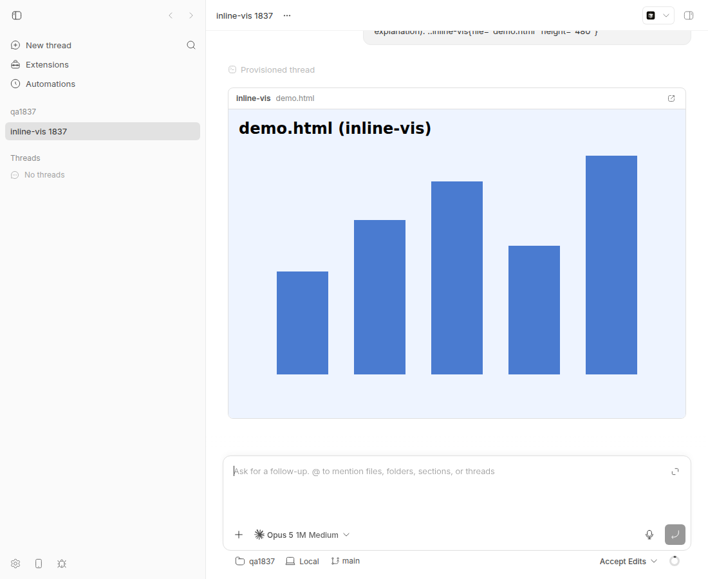
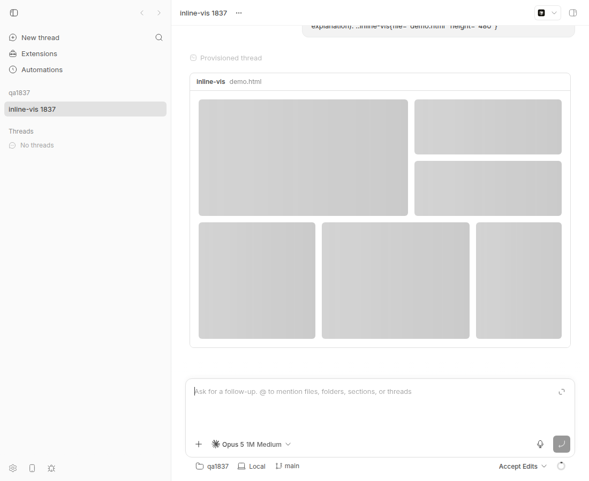

#1837 · Inline visualization loading causes a timeline layout jump
Verdict: REPRODUCED · Root-cause confidence: high
1. TL;DR
When an assistant message contains ::inline-vis{file="demo.html" height="480"}, the built-in inline-vis plugin first renders a one-line "Loading visualization demo.html…" box (37 px tall in the real app) while it asks the server to preflight the file, then swaps in a header plus a 480 px iframe (515 px total). The loading box never reserves the final height, so the moment the RPC resolves the timeline grows by ~478 px; because the thread view is bottom-anchored, everything above the visualization is shoved upward and out of view. This happens on every mount of the directive (every navigation into the thread, not only "cold" loads), because the component always starts in loading and waits for prepareHtmlPreview. The fix is trivial: render the same header + a fixed-height placeholder in the loading branch. PR #1555 does exactly that and removes the jump (measured 515 px → 515 px), but its "shimmer" animation is silently paused on current main by a CSS rule that pauses .animate-shine-icon inside any aria-hidden="true" host, and its tests pin brittle markup details.
2. Claims vs findings
| Claim from the issue | Status | Evidence |
|---|---|---|
| The loader renders compact, then is replaced by a full-height iframe, and the loader does not reserve the requested height. | Verified | Loading branch is a single text div with no height (app.tsx#L153-L161); ready branch sets style.height = previewHeight on the iframe (app.tsx#L203-L211). Measured in the real app: 37 px → 515 px (section 4). |
| The thread timeline shifts and moves surrounding content. | Verified | Screenshots 1837-loading.png vs 1837-loaded.png: the user message above the directive is scrolled out of view after the swap. |
| "Applies when the iframe height exceeds the compact loader" / only when the route is "cold enough to show loading". | Partly misleading | The iframe height (min 120 px) always exceeds the 37 px loader, so it applies to every directive. The loading state is shown on every mount (the component starts in loading and always awaits the RPC, app.tsx#L81-L121), not only on cold loads; duration is just shorter when the server is fast. |
| "Not iframe content reflow: the outer jump comes from different loader and preview heights." | Verified | The iframe has a fixed inline height; with PR #1555 applied the outer box height is identical before/after (delta 0) even though the iframe document loads later. |
| "Present on main before a191295c…" | Verified | Bug is present at base c7c66423d and on origin/main (no commits touched plugins/inline-vis/ after base). a191295c is simply the PR's head commit, not a main commit. |
| Medium priority. | Opinion | Visible on every load of an affected visualization, but inline-vis is an opt-in directive used rarely; Low (as triaged) is reasonable. |
3. Environment
- bb base commit
c7c66423d55c320bab9103218f0ffef1a8191331(worktree/home/sawyer/projects/bb/.claude/worktrees/wf_926b3193-f6c-16); origin/main was 3 commits ahead with no inline-vis changes. - Linux 7.0.0-29-generic, Node v24.18.0, Chrome headless via doobie 0.1.2.
- Provider used to produce the assistant message: claude-code (Claude Code 2.1.237), prompt "Reply with exactly this single line …".
- Dev instance: App
http://localhost:16414, Serverhttp://localhost:24414, Host daemon127.0.0.1:32414, data dir~/.bb-dev/projects-bb-.claude-worktrees-wf_926b3193-f6c-16-ad65f9a6c7db(deleted at cleanup). - Scratch project repo
/tmp/bb-1837-repocontainingdemo.html(an SVG bar chart).
4. Minimal reproduction
A. Unit-level (fails on base, passes with PR #1555)
- Save app.issue-1837.test.tsx as
plugins/inline-vis/app.issue-1837.test.tsx. cd plugins/inline-vis && pnpm exec vitest run app.issue-1837.test.tsx
// @vitest-environment jsdom
// Repro for get-bb/bb#1837: the inline-vis loading state does not reserve the
// requested preview height, so the timeline grows when the iframe replaces it.
import { cleanup, waitFor } from "@testing-library/react";
import { afterEach, describe, expect, it, vi } from "vitest";
import { loadPluginApp, renderSlot } from "@get-bb/plugin-sdk/testing/app";
const app = await loadPluginApp(() => import("./app"));
afterEach(cleanup);
const message = {
id: "msg_1",
threadId: "thr_1",
turnId: "turn_1",
projectId: "proj_1",
};
describe("issue #1837: inline-vis loading state reserves preview height", () => {
it("loading container keeps the same height as the final iframe", async () => {
let resolvePreview = (_r: { file: string }) => {};
const pending = new Promise<{ file: string }>((resolve) => {
resolvePreview = resolve;
});
const slot = renderSlot(
app.messageDirectives[0]!,
{
attributes: { file: "demo.html", height: "480" },
source: '::inline-vis{file="demo.html" height="480"}',
message,
openWorkspaceFile: vi.fn(() => true),
},
{ rpc: { prepareHtmlPreview: () => pending } },
);
// The loading state is a single-line text box with no explicit height.
const loader = await waitFor(() => {
const el = slot.container.querySelector('[aria-busy="true"]');
if (!(el instanceof HTMLElement)) throw new Error("loader not rendered");
return el;
});
const reserved =
loader.style.height !== ""
? loader
: loader.querySelector<HTMLElement>("[style*='height']");
// FAILS on c7c66423d: nothing in the loader carries the 480px height.
expect(reserved?.style.height).toBe("480px");
resolvePreview({ file: "demo.html" });
const iframe = await waitFor(() => {
const el = slot.container.querySelector("iframe");
if (!(el instanceof HTMLIFrameElement)) throw new Error("no iframe");
return el;
});
// The final iframe IS 480px tall, so the timeline grows by ~480px
// (plus the header row) the moment the RPC resolves.
expect(iframe.style.height).toBe("480px");
});
});
Output on c7c66423d (full log) — the loader carries no height at all, while the iframe that replaces it is 480 px:
al iframe 22ms
⎯⎯⎯⎯⎯⎯⎯ Failed Tests 1 ⎯⎯⎯⎯⎯⎯⎯
FAIL bb-plugin-inline-vis app.issue-1837.test.tsx > issue #1837: inline-vis loading state reserves preview height > loading container keeps the same height as the final iframe
AssertionError: expected undefined to be '480px' // Object.is equality
- Expected:
"480px"
+ Received:
undefined
❯ app.issue-1837.test.tsx:47:36
45| : loader.querySelector<HTMLElement>("[style*='height']");
46| // FAILS on c7c66423d: nothing in the loader carries the 480px hei…
47| expect(reserved?.style.height).toBe("480px");
| ^
48|
49| resolvePreview({ file: "demo.html" });
⎯⎯⎯⎯⎯⎯⎯⎯⎯⎯⎯⎯⎯⎯⎯⎯⎯⎯⎯⎯⎯⎯⎯⎯[1/1]⎯
Test Files 1 failed (1)
Tests 1 failed (1)
Start at 14:41:09
Duration 1.18s (transform 66ms, setup 0ms, import 687ms, tests 22ms, environment 388ms)
With the PR #1555 diff applied on top of c7c66423d the same file passes (log).
B. In the real app (browser)
- Start a dev instance (
scripts/bb-dev-app current), create a scratch repo with ademo.htmland a project pointing at it:mkdir -p /tmp/bb-1837-repo && cd /tmp/bb-1837-repo && git init -q && printf '<h1>hi</h1>' > demo.html && git add -A && git commit -qm init curl -s -X POST $BB_SERVER_URL/api/v1/projects -H 'content-type: application/json' \ -d '{"name":"qa1837","source":{"type":"local_path","path":"/tmp/bb-1837-repo","hostId":"<host id from bb machine list>"}}' - Produce an assistant message containing the directive (any provider works):
pnpm bb:dev thread spawn --project <proj id> --provider claude-code --permission-mode accept-edits \ --title "inline-vis 1837" --prompt 'Reply with exactly this single line and nothing else (no code fences, no explanation): ::inline-vis{file="demo.html" height="480"}' - Open the thread in the app. To freeze the loading state long enough to measure, doobie-repro.js intercepts the
POST …/plugins/inline-vis/rpc/prepareHtmlPreviewrequest, measures the directive box, screenshots, releases the request, and measures again:doobie --headless -t 120 run /tmp/bb-reports/issues/1837/repro/doobie-repro.js
Expected: the directive box has the same height while loading and after loading; nothing around it moves.
Actual (raw output):
{
"before": {
"state": "loading",
"boxTop": 194,
"boxHeight": 37,
"boxText": "Loading visualization demo.html…",
"scrollHeight": 900
},
"after": {
"state": "ready",
"boxTop": 194,
"boxHeight": 515,
"boxText": "inline-vis\ndemo.html",
"scrollHeight": 900
},
"deltaHeight": 478
}


Repro files: 1837/repro/
5. Root cause
InlineVisDirective starts in { status: "loading" } and stays there until the prepareHtmlPreview plugin RPC resolves (plugins/inline-vis/app.tsx#L81-L121). The loading branch renders a plain one-line box with no height:
if (state.status === "loading") {
return (
<div
className="my-2 rounded-md border border-border bg-muted px-3 py-2 text-sm text-muted-foreground"
aria-busy="true"
>
Loading visualization {state.file}…
</div>
);
}
(#L153-L161). The ready branch renders a header row plus an iframe whose inline height is the parsed height attribute (default 224 px, 120–1200):
<iframe
title={`inline-vis: ${state.file}`}
src={previewUrl}
sandbox="allow-scripts"
style={{ height: previewHeight ?? DEFAULT_HEIGHT_PX }}
className="block w-full border-0 bg-background"
/>
(#L203-L211). previewHeight is known synchronously from the attributes before any network call, so the final geometry is knowable in the loading state — it just is not used. The height delta (480 + header ≈ 478 px here; at least ~120 px for the minimum height) is applied in one React commit when the RPC resolves, which the bottom-anchored thread scroller absorbs by scrolling earlier content up. No deeper issue: the iframe has a fixed height so iframe-document loading does not change outer geometry (confirmed: with a reserving placeholder the delta is 0).
6. Proposed fix (first principles)
Render the same card chrome in the loading branch and reserve the preview height: header row (same classes as ready state; a size-5 spacer where the open-in-sidebar button will go) plus a <div style={{ height: previewHeight ?? DEFAULT_HEIGHT_PX }} role="status" aria-label=…> containing a placeholder. Any placeholder works; the simplest is one <Skeleton className="size-full" /> from @bb/shared-ui/skeleton (its built-in animate-pulse is fine). Optionally also keep the error branch inside the same card at the same height so the error path does not shrink the timeline either (not required by this issue). Risk: none beyond a few extra px of border; the card's header already exists in the ready branch so markup should be shared in a small helper to avoid drift. This is what PR #1555 does, minus the shimmer and the elaborate six-region grid.
7. PR review
PR #1555 — "Stabilize inline visualization loading skeleton" (head a191295c, base 241 commits behind main; applies cleanly to c7c66423d)
What it changes: plugins/inline-vis/app.tsx loading branch now renders the card header plus a role="status" container with style.height = previewHeight holding an aria-hidden 12×4 CSS grid of six Skeleton regions, each with animate-none and an inner span.animate-shine-icon.bg-foreground/10 shimmer. Adds one large test. Diff: pr-1555.diff.
Does it address the root cause? Yes — it reserves the final height in the loading state. Verified in the real app with the diff applied on c7c66423d (raw output): box height 515 → 515, delta 0; my repro test passes; all 18 plugin tests and typecheck pass.
{
"before": {
"state": "loading",
"boxTop": 136,
"boxHeight": 515,
"boxText": "inline-vis\ndemo.html",
"scrollHeight": 900,
"shimmer": [
{
"animationName": "shine-mask",
"playState": "paused",
"ariaHiddenAncestor": true
}
]
},
"after": {
"state": "ready",
"boxTop": 136,
"boxHeight": 515,
"boxText": "inline-vis\ndemo.html",
"scrollHeight": 900,
"shimmer": []
},
"deltaHeight": 0
}

Findings
| Severity | Where | Finding |
|---|---|---|
| Medium (cosmetic, contradicts the PR's stated behaviour) | plugins/inline-vis/app.tsx loading branch: <div aria-hidden className="grid …"> wrapping span.animate-shine-icon | Since #1880 (0bcf0b9e7, after this PR's base), theme.css#L1017-L1023 has [aria-hidden="true"] .animate-shine-icon { animation-play-state: paused }. React renders aria-hidden as aria-hidden="true", so every shimmer in this skeleton is paused in the real app. Measured via getComputedStyle: animationName: "shine-mask", playState: "paused", ariaHiddenAncestor: true. The "shimmer-only motion" the PR and its test promise never happens; the skeleton is a static gradient (visible as a frozen left-to-right band in the screenshot). The test cannot catch this because it only checks class names. Fix: drop aria-hidden from the grid (the regions have no text; role="status" + aria-label on the parent already conveys state) or don't reuse the icon-mask utility for a surface shimmer. |
| Low | plugins/inline-vis/app.tsx: .animate-shine-icon on a bg-foreground/10 span | .animate-shine-icon is documented as "Icon counterpart to .animate-shine" — a mask sweep for SVG glyphs (theme.css#L982-L989). Using it as a generic surface shimmer couples the plugin to an app-internal utility class whose semantics (edge opacity, pause rules, will-change) are tuned for icons and may change; plugins should use the shared Skeleton as-is or own their shimmer CSS. |
| Low | plugins/inline-vis/app.test.tsx new test (~100 lines) | Asserts implementation details that are not product behaviour: exact data-inline-vis-skeleton-step ids, absence of delay-*/animate-in/fade-in-0/slide-in-from-bottom-1/fill-mode-backwards classes (none of which ever existed in this file — these look like leftovers from a rejected iteration), a [data-inline-vis-skeleton-plot] that must be null, the spacer's size-5 class and aria-hidden. These will break on any restyle without catching a regression. The only behaviour worth pinning is: loading container height equals the iframe height, and the status role/label (≈15 lines). Also asserts shimmerElements.classList.contains("animate-shine-icon") as proof of motion — see finding 1. |
| Low | plugins/inline-vis/app.tsx | The card header (title row + spacer/button) is now duplicated between the loading and ready branches; extract a small shared wrapper so the two cannot drift (the whole point is that loading and ready geometry match). |
| Info | error / missing-file / invalid-height branches | Still render compact alerts, so loading → error shrinks the timeline by the reserved height. Acceptable for an error path but worth a sentence in the PR; not a blocker. |
| Info | PR hygiene | Branch is 241 commits behind main (rebase before merge; the diff applies cleanly). No protocol/wire changes, no server changes — layer is correct (app-side plugin UI). No casts or any. No README change needed. |
Tests run: pnpm exec vitest run in plugins/inline-vis with the diff applied (3 files, 18 tests pass, including my #1837 repro), pnpm exec turbo run typecheck --filter=bb-plugin-inline-vis (pass), live app measurement (delta 0) and computed-style probe of the shimmer (paused).
Verdict: REQUEST CHANGES. The height reservation is correct and fixes the issue; but the shimmer it advertises is dead on current main (finding 1), the test should be cut down to behaviour (finding 3), and the header should be shared. A ~20-line version (shared header + fixed-height <Skeleton>) would be mergeable as-is.
8. Related issues
- #1842 — Sidebar HTML previews cannot open full-page in the external browser (same plugin surface, different feature; filed by the same author/agent sweep).
- #1880 — "Snap timeline height tweens and trim paint work on phones" introduced the
[aria-hidden="true"] .animate-shine-iconpause rule that neutralises PR #1555's shimmer.
9. Appendix
Browser measurement script (base)
// Repro for get-bb/bb#1837 against a dev bb instance.
// Holds the inline-vis `prepareHtmlPreview` RPC so the loading state is visible,
// measures the directive box and the composer position, then releases the RPC
// and measures again. A layout jump shows as a different box height / composer
// offset between the two measurements.
const URL = "http://localhost:16414/projects/proj_zwnmd5uykh/threads/thr_yepw5sn448";
const page = await browser.getPage("bb1837");
await page.setViewport({ width: 1100, height: 900 });
let release = null;
const held = new Promise((r) => (release = r));
await page.setRequestInterception(true);
const onReq = async (req) => {
if (req.url().includes("/rpc/prepareHtmlPreview")) {
await held; // hold the RPC until we have measured the loading state
}
req.continue().catch(() => {});
};
page.on("request", onReq);
await page.goto(URL);
await page.waitForSelector('[aria-busy="true"]', { timeout: 30000 });
await new Promise((r) => setTimeout(r, 1200));
const measure = () =>
page.evaluate(() => {
const box =
document.querySelector('[aria-busy="true"]') ??
document.querySelector("iframe[title^='inline-vis']")?.parentElement;
const r = box.getBoundingClientRect();
const textarea = document.querySelector("textarea");
const t = textarea ? textarea.getBoundingClientRect() : null;
// Element directly after the directive in document order (anything below it shifts)
const scroller = box.closest("[data-radix-scroll-area-viewport], main") ?? document.scrollingElement;
return {
state: box.getAttribute("aria-busy") === "true" ? "loading" : "ready",
boxTop: Math.round(r.top),
boxHeight: Math.round(r.height),
boxText: box.innerText.slice(0, 80),
scrollHeight: scroller.scrollHeight,
};
});
const before = await measure();
await page.screenshot({ path: "/tmp/bb-reports/issues/assets/1837-loading.png" });
release();
await page.waitForSelector("iframe[title^='inline-vis']", { timeout: 30000 });
await new Promise((r) => setTimeout(r, 1500));
const after = await measure();
await page.screenshot({ path: "/tmp/bb-reports/issues/assets/1837-loaded.png" });
page.off("request", onReq);
await page.setRequestInterception(false);
({ before, after, deltaHeight: after.boxHeight - before.boxHeight });
Commands run
git checkout c7c66423d pnpm install --frozen-lockfile --prefer-offline pnpm exec turbo run build scripts/bb-dev-app current # App :16414 Server :24414 Host daemon :32414 cd plugins/inline-vis && pnpm exec vitest run app.issue-1837.test.tsx # FAILS on base mkdir -p /tmp/bb-1837-repo && ... demo.html ... git commit curl -s -X POST http://localhost:24414/api/v1/projects ... hostId host_g2wz9ytpfv # proj_zwnmd5uykh pnpm bb:dev thread spawn --project proj_zwnmd5uykh --provider claude-code --permission-mode accept-edits --title "inline-vis 1837" --prompt '...' # thr_yepw5sn448 doobie --headless -t 120 run /tmp/bb-reports/issues/1837/repro/doobie-repro.js # 37px -> 515px gh pr diff 1555 > pr-1555.diff && git apply --3way pr-1555.diff cd plugins/inline-vis && pnpm exec vitest run # 18 pass pnpm exec turbo run typecheck --filter=bb-plugin-inline-vis scripts/bb-dev-app current # rebuild with PR applied doobie --headless -t 120 run /tmp/bb-reports/issues/1837/repro/doobie-repro-pr1555.js # 515px -> 515px, shimmer paused git reset && git checkout -- plugins/inline-vis/app.tsx plugins/inline-vis/app.test.tsx pnpm dev:stop